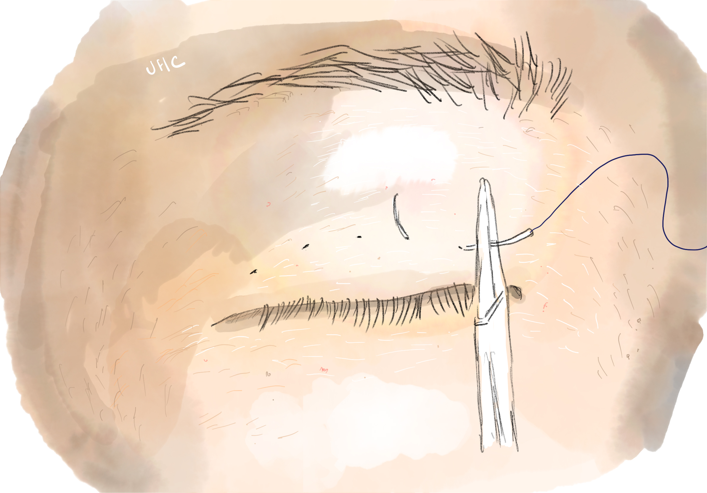
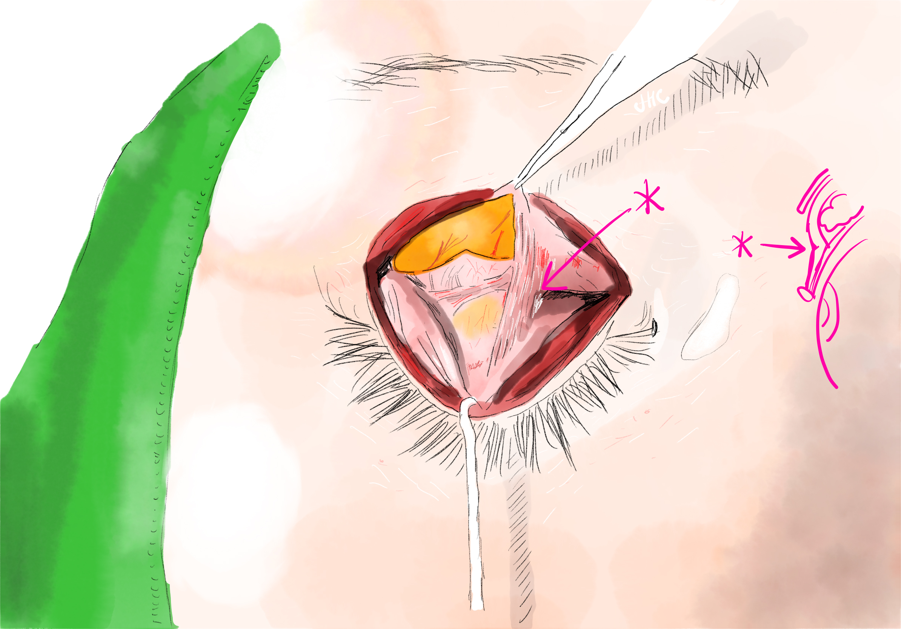
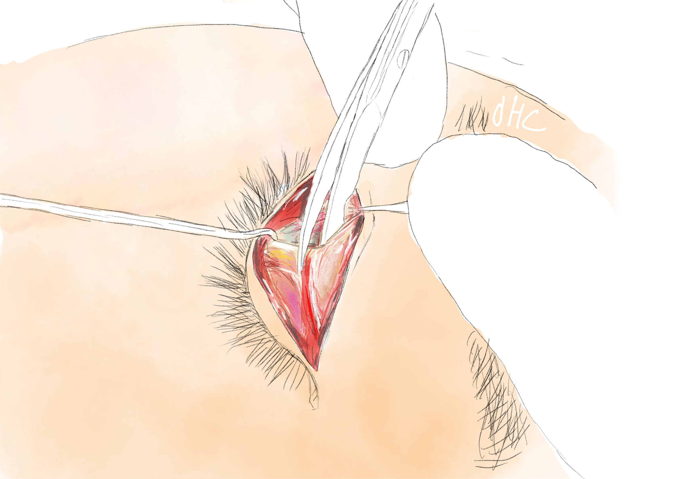

‘유착’ 이란 단어는 일상 생활에서는 잘 안 쓰이지만, 수술 관련 용어로 많이 접할 수 있습니다.
유착은, 어떤 조직과 어떤 조직이 ‘붙어있는’ 상태를 뜻하는데, 눈성형에서는 크게 두가지 상황에서 이 단어를 볼 수 있습니다.
첫번째로는 쌍꺼풀 수술로 쌍꺼풀을 만들 때, ‘유착’을 만드는 과정으로 수술을 하게 될 때입니다.

쌍꺼풀이란 현상 자체가, 눈꺼풀 피부가 뒤쪽의 조직과 붙어서 눈을 뜰때 같이 접혀 올라가는 것을 이야기 하기 때문에, 유착이 없는 동양인의 눈은 유착을 만드는 수술로 쌍꺼풀을 만들게 됩니다.
두번째로는 수술 후에 얘기치 않은 ‘유착’이 생겨서 불편함을 유발하거나, 원치 않는 겹주름이 생겼을 때입니다.

정리하자면, 적당한 쌍꺼풀이 있고 큰 눈이 되려면, 유착이 딱 하나만 적절하게 있어야 하고, 그 라인의 상부에는 유착이 없어야 합니다.
그래서 눈성형수술을 할때, 때로는 이런 유착을 만들어야 하고, 때로는 유착을 없애야 하며, 어떠 경우엔 유착이 생기지 않게 하는 어떤 처리를 해야하기도 합니다.
각각의 레이어 별로 분리를 하는 것만으로도 유착은 풀리기도 하며, 때로는 작은 가위로 엉겨붙어있는 흉터조직을 갈라내야합니다.

이런 제거된 유착은, 다시 접히는 형태로 재발할 수 있어 때로는 이식이나 재배치로 이를 방지해야합니다.
고난이도 눈재수술에서 많은 비율은 이러한 작업이 반드시 필요하게 되며, 이런 수술조작의 예측가능성에 따라 수술자의 실력이 판가름납니다.